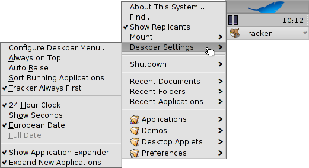

| Index |
|
The Deskbar Menu The Tray The list of running programs |
The Deskbar is the little panel that by default is located in the upper right corner of the screen. It's Haiku's version of Windows' taskbar with its Start button. It contains the Deskbar menu from where you can start applications and preferences, a tray with a clock and other tools below that and a list of currently running programs at the bottom.

You can move the Deskbar to any corner or as a bar along the upper or lower border of the screen by gripping the knobbly area on the left side of the tray and drag&drop it into the new position. You can also fold it into a more compact layout by drag&dropping the knobbly area onto the Deskbar menu.
The Deskbar Menu

A menu opens when you click on the Deskbar's top:
About This System... - Shows some basic information of the system, licenses and the credits of the Haiku project.
Find... - Opens the Query dialog.
Show Replicants - Shows/hides the little Replicant widget you use to drag it around, remove or access its context menu.
Mount - Offers the same options as when invoked by right-clicking the Desktop (see Mounting Volumes).
Deskbar Settings
Opens a panel to configure the Deskbar menu (see below). The Deskbar always stays above all other windows. The Deskbar pops to the front if the mouse pointer touches it. Sorts the list of running programs alphabetically. Even if you sort alphabetically, the Tracker entry always stays first in the list. Toggles between 24 and 12 hour clock. Adds the display of seconds to the clock. Shows the date in European format: day-month-year Provides a small widget to show/hide all windows of a program directly under its entry in the Deskbar. Newly launched programs have their windows automatically expanded under their entry in the Deskbar. Shutdown - Offers options to either or .
Recent Documents, Folders, Applications - List of the last recently opened documents, folders and applications (see below).
Applications, Demos, Deskbar Applets, Preferences - List of installed applications, demos, applets and preferences (see below).
Configure Deskbar Menu...

In this panel you set the number of recent documents, folders and applications that are shown in the Deskbar, or if you show them at all.
Here, you also configure folders and their contents, which are by default Applications, Demos, Deskbar Applets, and Preferences. You can add your own entries and edit or remove items.
This part of the panel is just a representation of the folder /boot/home/config/be/. You can just as well link or copy files and folders or even queries directly in Tracker to configure your Deskbar.
It's even easier to simply drag a file, folder or saved query and drop it where you want it into the Deskbar.
The Tray

Among other things, the tray is housing the clock. Left-click it to toggle between date and time. Right-click it to hide/show it or launch the Time preferences to set it.
Here you can also launch a calendar that also appears, when you hold down the left mouse button on the clock for a little time.
Any program can install an icon in the tray to provide an interface to the user. The email system, for instance, shows a different symbol when there's unread mail and offers a context menu to e.g. create or check for new mail. ProcessController is another example that uses its icon in the tray to provide information (CPU/memory usage) and to offer a context menu.
The list of running programs

You can change to a specific running application by clicking on its entry in the Deskbar and choosing (one of) its windows, from the submenu. By right-clicking you can minimize or close a window or the entire application.
If you activated Expanders in the Deskbar settings, you can expand/collapse the list of windows directly under an application's entry.
In front of every application's windows is a symbol providing info on its state. A bright symbol means a window is visible, a dark one that it's minimized. Three lines in front of a symbol shows that it's not on the current workspace.